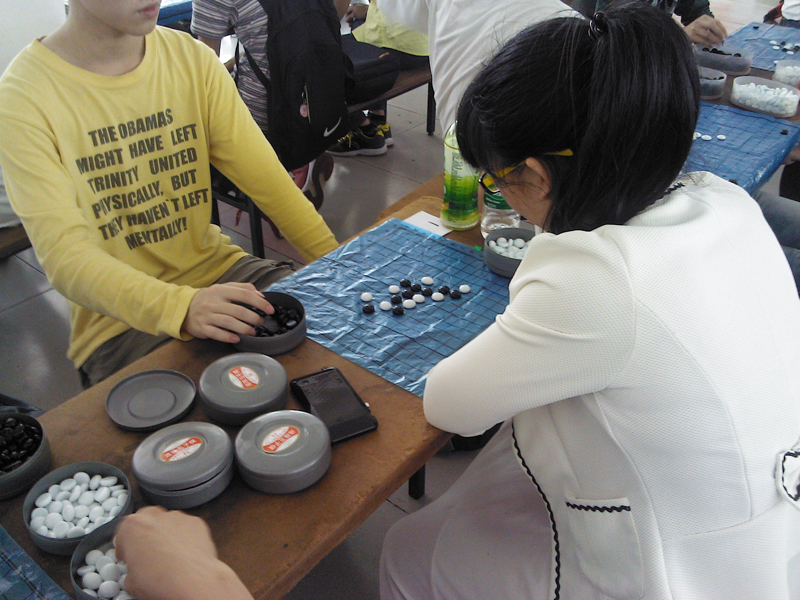
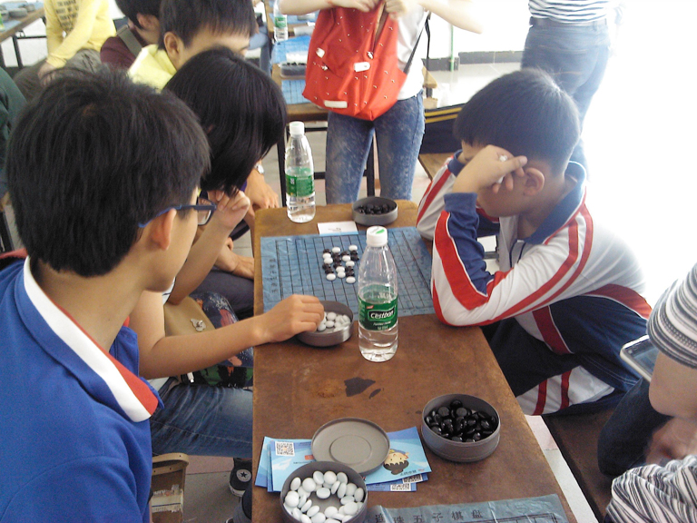
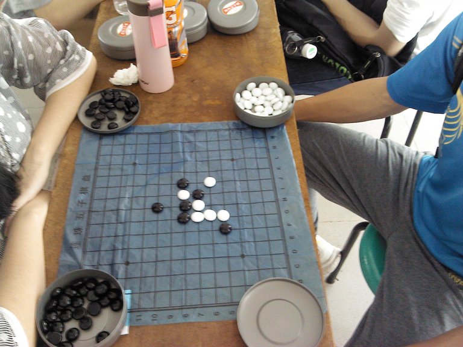
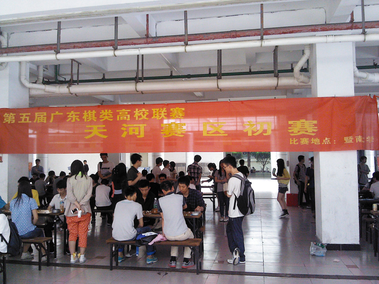

第五届广东高校棋类联赛天河赛区落幕
首页
广东五子棋
#1 第五届广东高校棋类联赛天河赛区落幕 作者：无尽 发表时间：2014-4-13 23:05:16
第五届广东高校棋类联赛预赛天河赛区今天在暨南大学落幕，RIF规则，六轮积分制。上届决赛冠军广东工贸职业技术学院强势包揽五子棋个人前三名（其中一位MM前五轮全胜）、团体前三名。这
样上届决赛四强：花都赛区冠军广东轻工职业技术学院、大学城赛区冠亚军中山大学和广东工业大学、天河赛区广东工贸职业技术学院都顺利晋级今年决赛。今年的冠军之争将更加激烈，而接下来珠
海、东莞赛区会不会出现什么黑马呢，拭目以待！
此外，就已结束3个赛区各棋种参赛人数来看，象棋明显多于其他三项，余下人数多少依次为五子棋、围棋、国际象棋。


小孩过来凑热闹


附上今天看到的两位MM的对局。。
［此帖子已被 无尽 在 2014-4-13 23:23:41 编辑过］
#2 Re:第五届广东高校棋类联赛天河赛区落幕 作者：虎哥 发表时间：2014-4-14 9:11:21
瑞星三打都出来了
#3 Re:第五届广东高校棋类联赛天河赛区落幕 作者：无尽 发表时间：2014-4-14 13:07:48
虎哥好眼力。。名月四打都有。。
#4 Re:第五届广东高校棋类联赛天河赛区落幕 作者：尕孩 发表时间：2014-4-14 13:31:16
貌似本次初斜月比^常。。松月山月也有人_。。fF在的妹子真素好害。。天河^的冠可素MM呢~
#5 Re:第五届广东高校棋类联赛天河赛区落幕 作者：无尽 发表时间：2014-4-14 18:32:16
冠军不是MM啊
#6 Re:第五届广东高校棋类联赛天河赛区落幕 作者：尕孩 发表时间：2014-4-14 19:03:53
吖。。8必∵
#7 Re:第五届广东高校棋类联赛天河赛区落幕 作者：鬼鬼狐 发表时间：2014-4-21 10:07:35